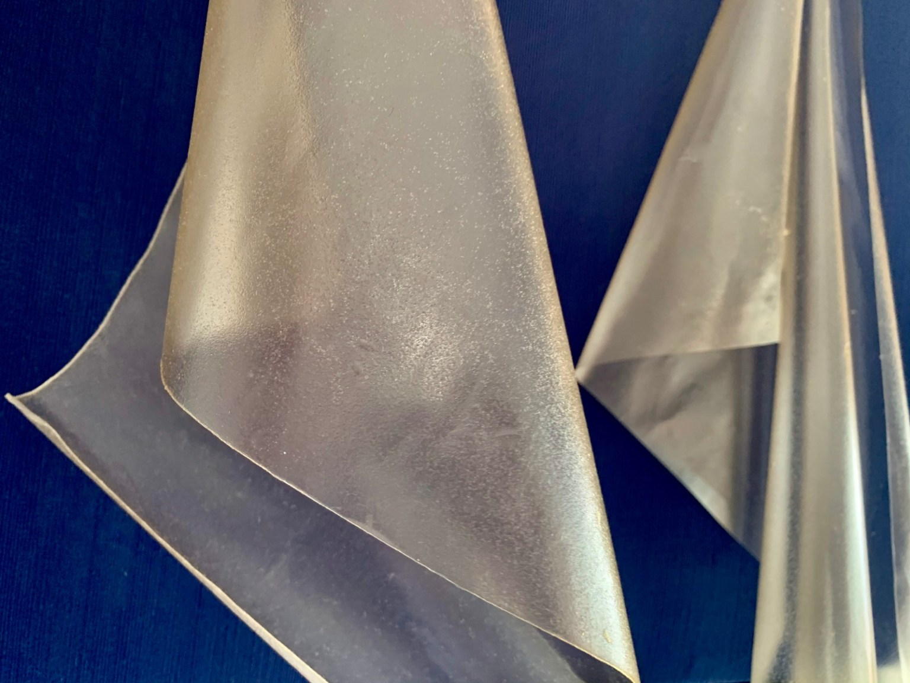
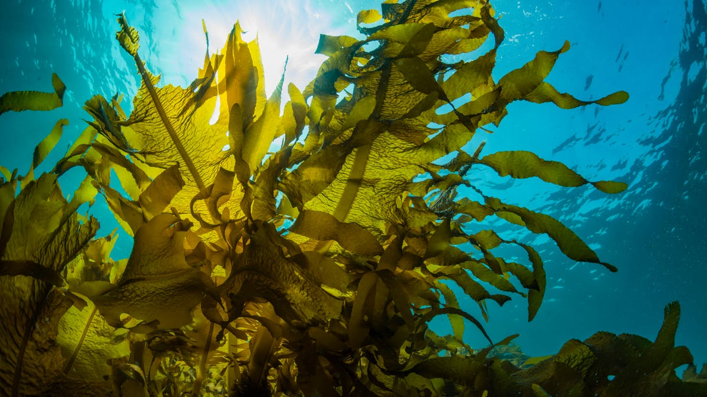

FlexSea is a young start-up based in London. They produce a sustainable, seaweed-derived material that replaces plastic film packaging and degrades in a matter of weeks. In this chat I spent time with Carlo Fedeli and Thibaut Monfort Micheo, the founding team. Both studied at Imperial College London until 2020 and have a lot of experience across a wide repertoire of areas from business to material sciences.

It's easy to feel hyper-motivated about solving the global plastic problem after chatting to these two. In this edited conversation with Pete Green, the FlexSea team spoke about their mission and gave some sound advice to fellow entrepreneurs.
What was the motivation behind creating FlexSea?
We wanted to do something where we could personally have an impact. The oceans and forests are a huge source of pleasure for us. We've always been into the sustainability ecosystem, especially in our native Monaco. After single-use plastics from groceries and online shopping started to stack up at home it became clear that there was a problem. We started looking into packaging alternatives which would be more sustainable than current products. The conclusion was to use seaweed to create a bioplastic- FlexSea.
Was entrepreneurship always a goal for you guys?
Well, both of our parents are entrepreneurs, have developed their own businesses and worked with a lot of patents. It was something natural for both of us.
Thibaut, how did you personally get involved in this space?
Carlo had the original idea and, after a year and a half of work, decided that he needed someone with a more scientific background to join him. We are both originally from Monaco and already knew each other from there. We got back in touch when Carlo moved to London. Then, one Sunday morning he called me and said “I have this idea - it's about bioplastics and you could do the R&D.” So I joined the venture as a CTO and we’ve since made good progress with the prototype. Now with some product development, a lot of research and plenty of idea- generation, we have a patent on the prototype.
Could you tell me what the biggest challenges have been so far and how you’ve overcome them?
Carlo: A few main challenges stand out. The first being my lack of any deep scientific experience. I loved the challenge of learning but, naturally, at some point I just needed more expertise. The second challenge was financial. We’re bootstrapped so we have to do things locally at the moment. Despite this, we’ve managed to do really well and we’re working on fundraising. Fundraising is a challenge in itself.
Thibaut: On the topic of fundraising, a story my academic tutor tells me is that, if you're lucky, five percent of your time as a professor is spent in the lab and the other 95 percent is spent looking for funding. It's something you need to consider early. Another challenge is that when you leave university, you often realise that you don't know anything. In terms of developing a real technical product, you might know nothing. That was a really hard thing to accept at first. Thinking outside the box is a skill we had to develop. If you want to do something new, you need to develop that bit of imagination.
How are you guys learning on the job? Given that juggling the building and the learning is difficult at times, what strategies do you have to stay on top of things?
I think the question is how do you keep learning in a methodical way. There are an infinite number of things to learn. If you tried to go in every direction, you lose your time. We needed to learn how to divide the tasks and not try to stay on top of everything.
There are three obvious ways to learn in a start-up. Number one- keep reading. Books, articles and reports on business, science and much more. There is so much to consume and it really makes the difference.
Number two, talk to people. It's vital. Get advisers. We're lucky enough to have an adviser with 30 years of experience in startups and scale ups. He's always pushing us to be better.
Number three, it’s not really a strategy but a reality that you're forced to learn when you're up against a stone wall. Even if you don't see the learning opportunity when you’re up against an impossible task, you will still learn something because you discover new things every time you do something. Especially in the startup, entrepreneurial life.

So you’ve touched on the power of mentorship in navigating this career path but, in your opinions, what are the most common reasons for deep-tech start-ups to fail?
Fundraising and money are definitely key reasons. A problem with fundraising in deep-tech is time-span. You have to consider that investors are looking for a return on investment. Ten years invested in deep tech is an awfully long time and puts a lot of investors off. Then, once you have funding you can stumble by spending too much, or spending too little and not making enough progress.
Another reason for failing is because you don't build a strong foundation. There's a lot of things that can go wrong in business and you have to be prepared. If you’re not looking around making sure that everything you do is right, stuff can go very, very badly. It's like if you're building your house, every brick counts.
How do you make sure that you get everything right?
It’s really about talking to each other and having good communication. At the end of the day two heads are better than one.
So what's next for FlexSea?
On the technical side, we need to keep improving the product. For this we need to get a chemical engineer or a polymer scientist. This all means funding. So the second goal is to raise more money and find a new lab. We’ve been accepted into the Mass Challenge Accelerator in Switzerland which will help us here.
What guidance would you give to someone else on this path?
I think our experience shows that you don't necessarily need a technical background to make progress in deep tech. So, if you have a passion and an interest in something you can get some seriously good work done.
Another thing is to think about fundraising early. Getting the fuel into the car is one of the hardest parts for a lot of entrepreneurs.